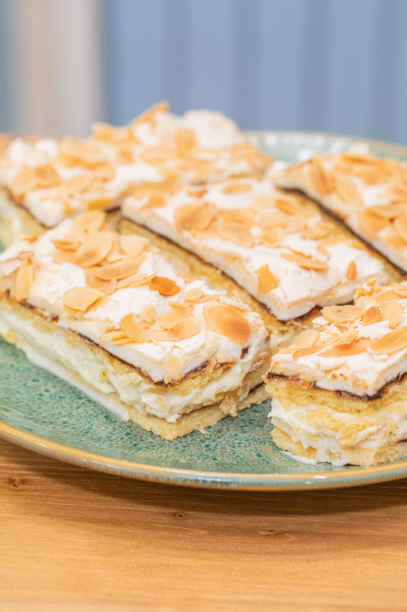
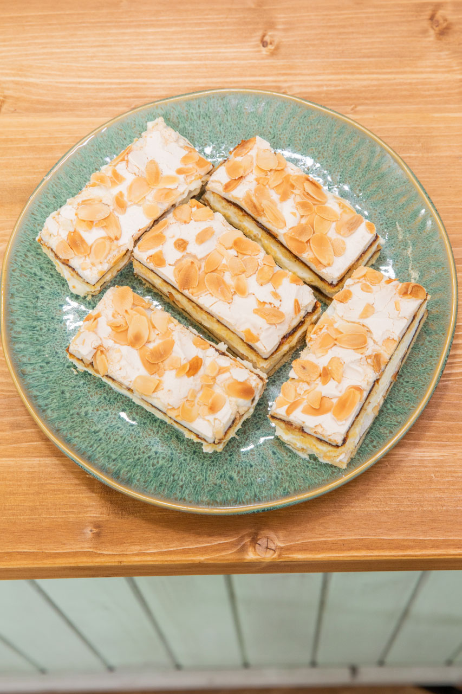
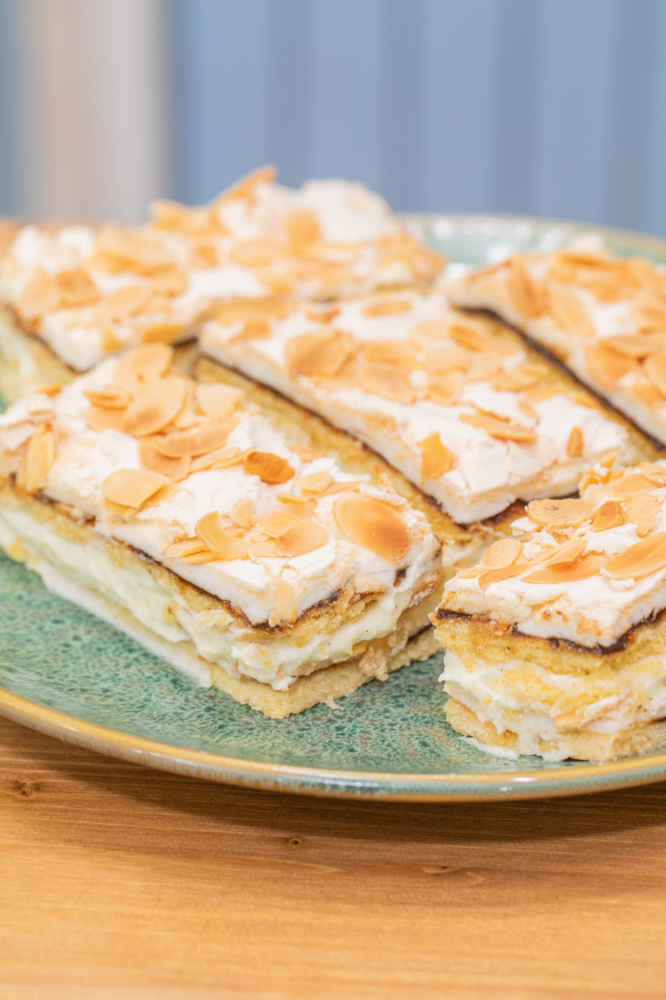
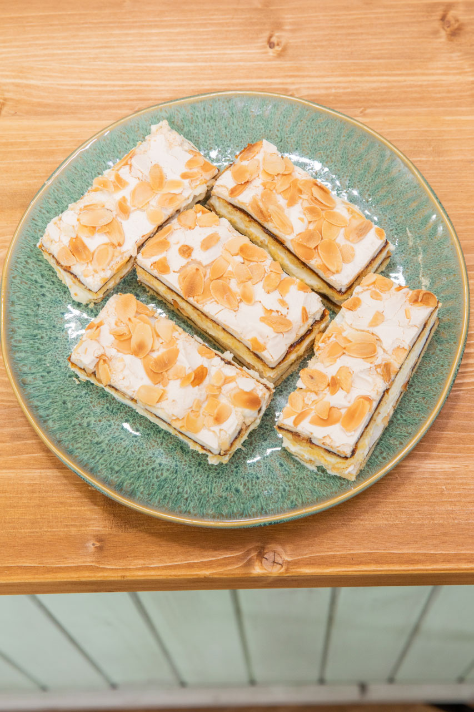

„Variace na Walevskou jsou v naší rodině nejvíc oblíbené. Pro soutěž jsem vybrala variantu venkovskou, s povidly a plátky mandlí.”
Křehké těsto
250 g hladké mouky
40 g moučkového cukru
100 g změklého másla
3 žloutky
1 rovná lžička prášku do pečiva+ povidla
+ bílkový sníh (6 bílků, 300 g krupicového cukru, 1 lžíce bramborového škrobu)
+ 100 g plátkovaných mandlí
Ze surovin na křehké těsto vypracujeme těsto a dáme chvilku do lednice. Poté ho vyvalováním a vtlačováním namačkáme v tenké vrstvě na plech (drobí se).
Tuto vrstvu bohatě pomažeme povidly a na povidla opatrně rozetřeme bílkový sníh (bílky, cukr a škrob) a hustě posypeme plátky mandlí.
Pečeme cca 40 minut v předehřáté troubě na 170 °C.
Krém
250 ml mléka
15 g hladké mouky
10 g bramborového škrobu
1 žloutek
35 g cukru krupice
trošku vanilkového extraktu
100 g másla
Zatímco se peče, uvaříme si na krém kaši. Mléko rozdělíme na poloviny, jednu polovinu svaříme s cukrem a vanilkou, ve druhé rozšleháme mouku, žloutek, škrob a uvaříme jako puding.
Přikryjeme fólií a necháme v ledničce vychladnout.
Následně vyšleháme máslo a zašleháme kaši. Kaše má tendenci se srážet, ale pomůže ji nahřát trochu v páře a přešlehat.
Dokončení
mandle
Řezy po upečení a vychladnutí překrojíme podélně na 2 kusy. Jednu část potřeme krémem a druhou přiklopíme mandlemi nahoru.
Necháme vychladit a nakrájíme na řezy.
 
